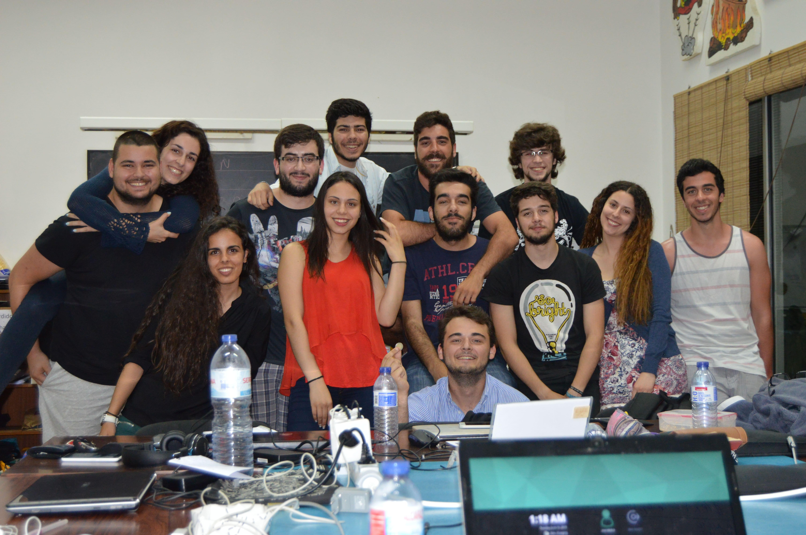
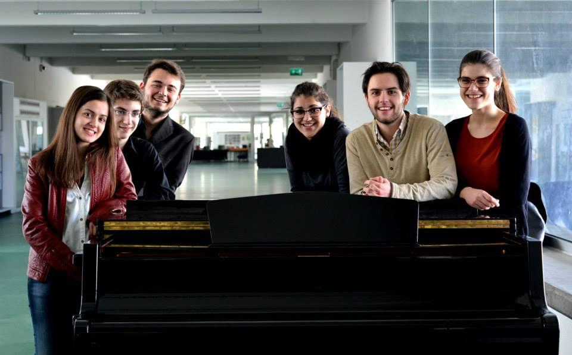

Hello!
Filipe Mendes, a reasonable and honest Front-End Engineer. Always looking for embrace a new good challenge.
-> Skills and Experience
Selected Projects
These are the causes I decided to embrace recently.

Multimedia Students National Meeting
Coordinator
2019

ShiftAPPens
Treasurer, Coordinator and Host
2016 -> 2019

I National AECMC Orchestra Stage
Coordinator
2014
Highlighted Organizations
These are the responsibles for who I am today.


NEI/AAC
Treasurer and Big Events Coordinator
2015 -> 2019
Organize events to improve others' hard and soft skills was always one of my preferred things to do.
First, as the treasurer and, then, as Big Events Coordinator, I made part of a 50-member incredible team during these 4 years and held more than 40 activities per year, including tech and non-tech related events.

AECMC
President and Treasurer
2012 -> 2014
Different people, different kind of work.
For 3 years, we were engaged in developing ways of filling in knowledge and experience the notorious absence of students from a public music conservatory.

FUT
Musician
2008 -> ...
Since the early days, I walked through a musician path.
And so, I play transverse flute with my local philharmonic since 2008, and I hope to be part of this for a long, long time.
Speak to me
Here are your options:

If you want to see a random dude travelling around the world.
-> Open my profile

If you want to gather knowledge about my thoughts.
-> Open my profile

If you want to see some coding proficiency.
-> Open my profile

If you want to get deep knowledge about my connections and past.
-> Open my profile

Where I make fascist bitches sing.
-> Open my profile